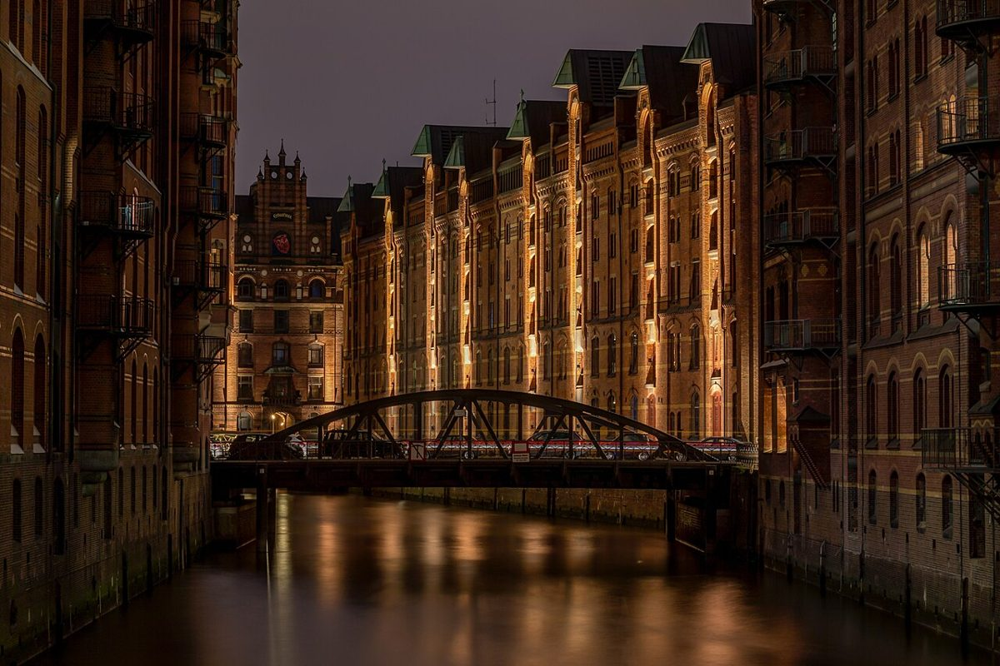

Découvrez la Speicherstadt de Hambourg : Un Voyage à travers l’Histoire et le Charme Fluvial

La Speicherstadt, littéralement la « ville des entrepôts », est un quartier emblématique de Hambourg, en Allemagne. Classée au patrimoine mondial de l'UNESCO, cette zone historique offre un mélange unique d’architecture néogothique, de canaux pittoresques et d’attractions culturelles. Que vous soyez un amateur d’histoire, un photographe ou simplement en quête d’une escapade charmante, la Speicherstadt a de quoi vous séduire. Voici tout ce qu'il faut savoir pour explorer ce quartier fascinant.
Comment se rendre à la Speicherstadt
La Speicherstadt est située au cœur de Hambourg, ce qui la rend facilement accessible. Si vous arrivez en train, la gare centrale de Hambourg (Hauptbahnhof) est à quelques minutes à pied. Les transports en commun sont également une excellente option : prenez le métro (U-Bahn) jusqu’à la station Baumwall ou la ligne S-Bahn jusqu’à la station Stadthausbrücke. Pour ceux qui préfèrent marcher, une promenade depuis l’hôtel de ville de Hambourg est agréable et vous permet de découvrir la ville en chemin.
La meilleure période pour visiter
La Speicherstadt est magnifique toute l’année, mais certaines périodes se prêtent particulièrement bien à la visite. L’été est idéal pour profiter des canaux et des terrasses en plein air, tandis que l’hiver offre une ambiance féerique, surtout pendant les marchés de Noël. Si vous préférez éviter les foules, visitez tôt le matin ou en semaine hors des vacances scolaires.
Les incontournables à ne pas manquer
1. Miniatur Wunderland : Ce musée de modèles réduits est l’une des attractions les plus populaires de Hambourg. Découvrez des paysages miniatures spectaculaires, des trains en mouvement et des scènes du monde entier.
2. Le Musée de l’épice : Plongez dans l’histoire du commerce maritime et découvrez les saveurs qui ont façonné la cuisine mondiale.
3. Les ponts et canauxLaissez-vous charmer par les ponts en brique rouge et les reflets des bâtiments dans l’eau. Le pont Poggenmühlenbrücke est un spot photo incontournable.
4. La Maison du Thé : Visitez cette boutique historique pour explorer les différentes variétés de thé et profiter d’une dégustation.
5. Le Musée maritime de Hambourg : Explorez l’histoire maritime de la ville et admirez des maquettes de navires impressionnantes.
Où manger dans la Speicherstadt
Après une journée de découvertes, faites une pause culinaire dans l’un des nombreux cafés ou restaurants du quartier. Pour une expérience authentique, goûtez au traditionnel Fischbrötchen (sandwich au poisson) dans l’un des petits stands locaux. Si vous préférez un repas plus copieux, les restaurants à proximité servent des spécialités régionales comme le Labskaus, un plat typique du nord de l’Allemagne. Enfin, ne manquez pas de déguster une tasse de thé ou un gâteau dans l’un des charmants salons de thé du quartier.
Conseils pratiques
Portez des chaussures confortables, car la Speicherstadt se découvre principalement à pied. Pensez aussi à apporter un appareil photo pour immortaliser les paysages uniques. Enfin, si vous prévoyez de visiter plusieurs attractions, vérifiez les possibilités de billets combinés ou de réductions pour les visiteurs.
La Speicherstadt est une destination incontournable pour tout visiteur de Hambourg. Entre son histoire riche, son architecture impressionnante et son ambiance chaleureuse, ce quartier promet une expérience mémorable. Préparez votre itinéraire et laissez-vous charmer par ce joyau fluvial allemand !
Haiktec
- Le Guide Pratique pour les Enseignants : Stratégies Simples pour Gagner du Temps et Améliorer vos Cours
- Planificateur de Chantier & Suivi Budgétaire pour Artisans
- 7 Histoires Enchantées pour le Dodo : Des Aventures Magiques pour les Petits Explorateurs
Text mit KI erstellt und automatisch geprueft.